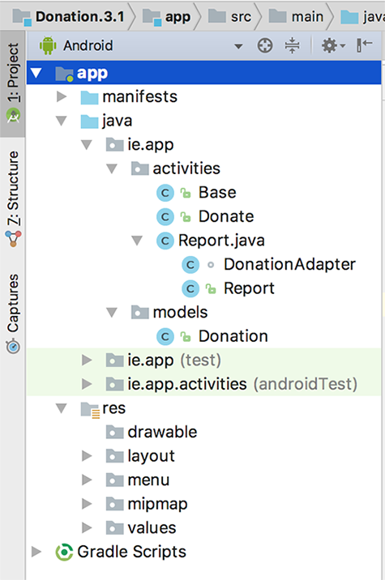
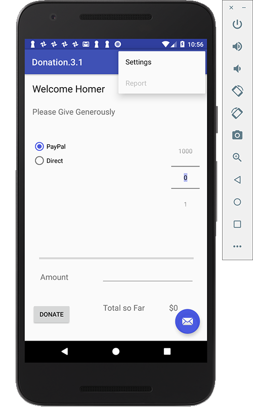
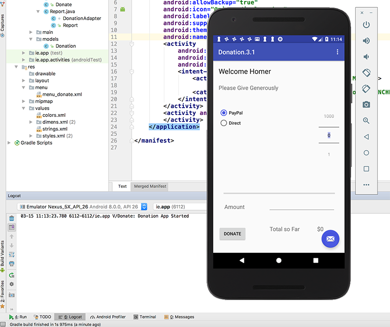

In Donation.3.1 you will build on the previous lab and add in some new features and JSON File Support, and an Application Object. On completion of this lab you'll be able to add File Handling using JSON to an Android Application and work with an 'Application' object.
As with the previous labs, you can download the solution/starter code for Donation.3.1.starter, or continue on with your own version.
Your current project (after renaming/copying) should looks as follows:

In this lab, you are required to do the following:
The following steps will guide you through these requirements, so we'll start with the Menu Option.
First of all, confirm that the current Menu looks like this:

but we want something like this:
The first thing to do is add in a new resource in strings.xml (or use Android Studio (Alt + Return) to fix the string resource error if you paste in the menu item directly)
<string name="menuReset">Reset</string>and then the corresponding menu item in donate.xml
<item
android:id="@+id/menuReset"
android:orderInCategory="100"
app:showAsAction="never"
android:title="@string/menuReset"
android:onClick="reset"/>It's probably worth removing the 'Settings' menu item at this stage too, and its related method in the Base class. Next, edit Base.java and add in the following method stub
public void reset(MenuItem item) {}to ensure our app won't crash when the menu loads (and looks for a method 'reset')
Run the app again and confirm you get the following Menu :
We can't implement this menu option fully yet, so for the moment, we'll just 'reset' the target amount back to zero (0) - Step 03.
This is more of an interim step but is necessary to ensure the menu event handler for the 'Reset' option is working correctly.
First, edit Donate.java and introduce an implementation of the 'reset' method
@Override
public void reset(MenuItem item)
{
// Your implementation goes here
}the
@Overrideannotation is important - can you explain why?
So add in the code necessary to deal with the Reset Menu option being selected, and reset the totalDonated back to zero (0). You also need to update the Donate UI to reflect this reset, so try and have a go at that too.
Run the app again to confirm that the 'Reset' Menu option is now functioning.
Before we complete this step, here's the code you need for the previous step.
@Override
public void reset(MenuItem item)
{
totalDonated = 0;
amountTotal.setText("$" + totalDonated);
progressBar.setProgress(0);
donations.clear();
}In order to keep out application design coherent, we now bring in an 'Application' object.
Create a new package called 'ie.app.main' and incorporate this class here:
package ie.app.main;
import android.app.Application;
import android.util.Log;
public class DonationApp extends Application
{
@Override
public void onCreate()
{
super.onCreate();
Log.v("Donate", "Donation App Started");
}
}Application objects need to be references in the AndroidManifest.xml - at the very top as 'andorid:name'
<application
android:allowBackup="true"
android:icon="@mipmap/ic_launcher"
android:label="@string/app_name"
android:supportsRtl="true"
android:theme="@style/AppTheme"
android:name="ie.app.main.DonationApp">Make sure the 'Donation App Started' appears in the logs to verify that it has actually been engaged correctly, when you launch the app.

We now need to refactor the Base class (next Step) and move the donation related attributes and method (i.e. the variables target, totalDonated and the donations list, and the newDonation() method) into our DonationApp class.
This is a revised version of DonationApp - which now manages a list of donations. It also centralises the 'makeDonation' event implementing it as a method. We will also 'open' and 'close' our JSON file here. Replace your DonationApp class with this one:
package ie.app.main;
import java.util.ArrayList;
import java.util.List;
import android.app.Application;
import android.util.Log;
import android.widget.Toast;
import ie.app.models.Donation;
public class DonationApp extends Application
{
public final int target = 10000;
public int totalDonated = 0;
public List <Donation> donations = new ArrayList<Donation>();
public boolean newDonation(Donation donation)
{
boolean targetAchieved = totalDonated > target;
if (!targetAchieved) {
donations.add(donation);
totalDonated += donation.amount;
}
else
Toast.makeText(this, "Target Exceeded!", Toast.LENGTH_SHORT).show();
return targetAchieved;
}
@Override
public void onCreate()
{
super.onCreate();
Log.v("Donate", "Donation App Started");
}
}You'll have a number of errors but wait until the next step to investigate further as a lot of the errors will be fixed at that stage.
The Base activity can now be completely refactored to make use of the DonationApp object.
This is our new Base class
package ie.app.activities;
import android.content.Intent;
import android.support.v7.app.AppCompatActivity;
import android.view.Menu;
import android.view.MenuItem;
import android.os.Bundle;
import ie.app.R;
import ie.app.main.DonationApp;
public class Base extends AppCompatActivity {
public DonationApp app;
@Override
protected void onCreate(Bundle savedInstanceState) {
super.onCreate(savedInstanceState);
app = (DonationApp) getApplication();
}
@Override
public boolean onCreateOptionsMenu(Menu menu)
{
getMenuInflater().inflate(R.menu.menu_donate, menu);
return true;
}
@Override
public boolean onPrepareOptionsMenu (Menu menu){
super.onPrepareOptionsMenu(menu);
MenuItem report = menu.findItem(R.id.menuReport);
MenuItem donate = menu.findItem(R.id.menuDonate);
MenuItem reset = menu.findItem(R.id.menuReset);
if(app.donations.isEmpty())
{
report.setEnabled(false);
reset.setEnabled(false);
}
else {
report.setEnabled(true);
reset.setEnabled(true);
}
if(this instanceof Donate){
donate.setVisible(false);
if(!app.donations.isEmpty())
{
report.setVisible(true);
reset.setEnabled(true);
}
}
else {
report.setVisible(false);
donate.setVisible(true);
reset.setVisible(false);
}
return true;
}
public void report(MenuItem item)
{
startActivity (new Intent(this, Report.class));
}
public void donate(MenuItem item)
{
startActivity (new Intent(this, Donate.class));
}
public void reset(MenuItem item) {}
}There'll be a few small errors to fix (relating to references to what was in the Base class, but is now in the Application class) so Builde your project and use Android Studio to help you.
The Donation model class will need an ability to save and restore itself to some external format. A convenient choice for this format is JSON:
Android has support for this format in its libraries:
import org.json.JSONException;
import org.json.JSONObject;.. we should define in our classes appropriate names for each of the fields we wish to serialize:
private static final String JSON_ID = "id";
private static final String JSON_AMOUNT = "amount";
private static final String JSON_METHOD = "method";This Donation class will need a new constructor to load a Donation object from JSON:
public Donation(JSONObject json) throws JSONException
{
id = json.getLong(JSON_ID);
amount = json.getInt(JSON_AMOUNT);
method = json.getString(JSON_METHOD);
}... and a corresponding method to save an object to JSON:
public JSONObject toJSON() throws JSONException
{
JSONObject json = new JSONObject();
json.put(JSON_ID , id);
json.put(JSON_AMOUNT , amount);
json.put(JSON_METHOD , method);
return json;
}public class Donation
{
public long id;
public int amount;
public String method;
private static final String JSON_ID = "id";
private static final String JSON_AMOUNT = "amount";
private static final String JSON_METHOD = "method";
public Donation (int amount, String method)
{
this.id = unsignedLong();
this.amount = amount;
this.method = method;
}
public Donation(JSONObject json) throws JSONException
{
id = json.getLong(JSON_ID);
amount = json.getInt(JSON_AMOUNT);
method = json.getString(JSON_METHOD);
}
public JSONObject toJSON() throws JSONException
{
JSONObject json = new JSONObject();
json.put(JSON_ID , id);
json.put(JSON_AMOUNT , amount);
json.put(JSON_METHOD , method);
return json;
}
@Override
public String toString() {
return "Donation{" +
"id= " + id +
"amount=$" + amount +
", method='" + method + '\'' +
'}';
}
/**
* Generate a long greater than zero
* @return Unsigned Long value greater than zero
*/
private Long unsignedLong() {
long rndVal = 0;
do {
rndVal = new Random().nextLong();
} while (rndVal <= 0);
return rndVal;
}
}In order to perform the actual serialization, we provide a new model class (DonationSerializer) to save and restore a list of Donations:
package ie.app.models;
import java.io.BufferedReader;
import java.io.FileNotFoundException;
import java.io.IOException;
import java.io.InputStream;
import java.io.InputStreamReader;
import java.io.OutputStream;
import java.io.OutputStreamWriter;
import java.io.Writer;
import java.util.ArrayList;
import org.json.JSONArray;
import org.json.JSONException;
import org.json.JSONTokener;
import android.content.Context;
public class DonationSerializer
{
private Context mContext;
private String mFilename;
public DonationSerializer(Context c, String f)
{
mContext = c;
mFilename = f;
}
public void saveDonations(ArrayList<Donation> donations) throws JSONException, IOException
{
// build an array in JSON
JSONArray array = new JSONArray();
for (Donation d : donations)
array.put(d.toJSON());
// write the file to disk
Writer writer = null;
try
{
OutputStream out = mContext.openFileOutput(mFilename, Context.MODE_PRIVATE);
writer = new OutputStreamWriter(out);
writer.write(array.toString());
}
finally
{
if (writer != null)
writer.close();
}
}
public ArrayList<Donation> loadDonations() throws IOException, JSONException
{
ArrayList<Donation> donations = new ArrayList<Donation>();
BufferedReader reader = null;
try
{
// open and read the file into a StringBuilder
InputStream in = mContext.openFileInput(mFilename);
reader = new BufferedReader(new InputStreamReader(in));
StringBuilder jsonString = new StringBuilder();
String line = null;
while ((line = reader.readLine()) != null)
{
// line breaks are omitted and irrelevant
jsonString.append(line);
}
// parse the JSON using JSONTokener
JSONArray array = (JSONArray) new JSONTokener(jsonString.toString()).nextValue();
// build the array of donations from JSONObjects
for (int i = 0; i < array.length(); i++)
{
donations.add(new Donation(array.getJSONObject(i)));
}
}
catch (FileNotFoundException e)
{
// we will ignore this one, since it happens when we start fresh
}
finally
{
if (reader != null)
reader.close();
}
return donations;
}
}Place this complete class in the 'models' package.
The DonationApp Application class will now be equipped with the capability to use the serializer to save and restore the Donations it is managing. It will use the DonationSerializer class just developed to do this.
First, introduce the serializer as a member of the DonationApp class:
private DonationSerializer serializer;... then revise the onCreate() to setup a serializer when it is being initialised:
@Override
public void onCreate()
{
super.onCreate();
Log.v("Donate", "Donation App Started");
serializer = new DonationSerializer(this,"donations.json");
try {
donations = serializer.loadDonations();
Log.v("Donate", "Donation JSON file Created/Loaded");
}
catch (Exception e) // Catch everything!!
{
Log.v("Donate", "Error loading Donations: " + e.getMessage());
donations = new ArrayList<Donation>();
}
}Then in your Base class add/Override the following method to save our donations, once the user closes the app.
@Override
protected void onDestroy() {
super.onDestroy();
try {
app.serializer.saveDonations(app.donations);
Log.v("Donate", "Donation JSON File Saved...");
}
catch (Exception e)
{
Log.v("Donate", "Error Saving Donations... " + e.getMessage());
}
}Run your app and confirm that you can now persist your donations.
It should now be possible to save and load the donations. Verify that this works - you will need to completely kill the app for this to be verified.
The last step in this lab involves deleting all the donations in the JSON file when the user wishes to 'Reset'.
There's actually not a lot required in this step - all you need to do is clear() the donations list and store that empty list back to the file when the user selects the Menu option, (we're not really deleting, but we get what we want!) so modify your reset method (in your Donate.java) as follows:
@Override
public void reset(MenuItem item)
{
app.totalDonated = 0;
amountTotal.setText("$" + app.totalDonated);
progressBar.setProgress(0);
app.donations.clear();
try {
app.serializer.saveDonations(app.donations);
Log.v("Donate", "Donation JSON File Reset...");
}
catch (Exception e)
{
Log.v("Donate", "Error Resetting Donations... " + e.getMessage());
}
}You also need to update your onPrepareOptionsMenu() method in your Base class to handle the 'Reset' menu option being disabled/displayed properly, so refer to the lecture material for this.
That's about it really - with one exception. There's a small bug in the app related to when the app restarts and the target HAS NOT been reached.
Can you find it, and more importantly, fix it?
As an exercise, purely for comparison, have a go at replacing the JSON serializer code with Google's Gson.
First, you need to add the relevant dependencies, like so:
compile 'com.google.code.gson:gson:2.8.2' // for Googles Gson JSON ParserThen, referring to the lecture material see if you can refactor the DonationSerializer class to use Gson instead of the standard JSON libraries.